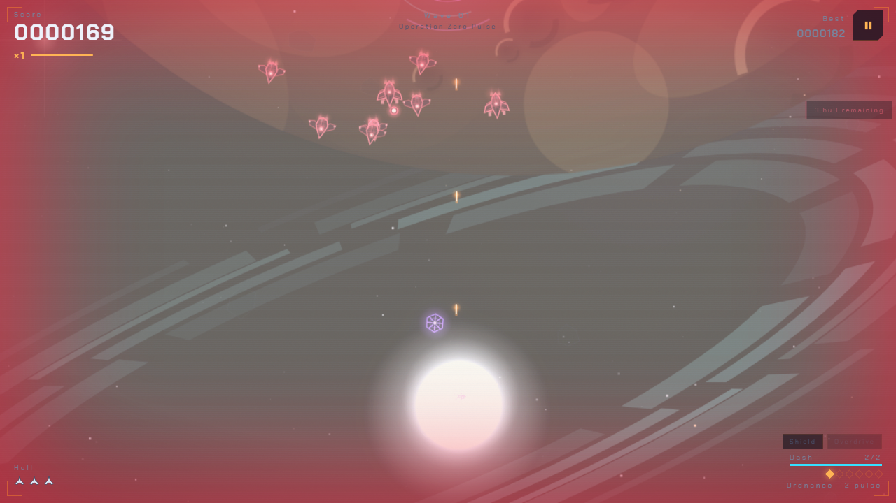
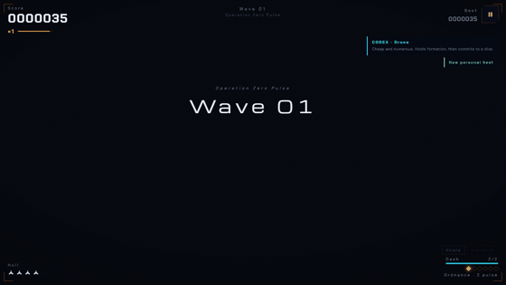

Something came through the Kuiper gate and it has not stopped since. You are the last hull between it and the orbital yard. Click Launch — that's the whole tutorial.

The game's own CI plays it. An autopilot bot flies real touch inputs every push — survives into wave 3, grazes bullets, chains combos — and the run is machine-verified before anything ships. The first sixty seconds of a new player's life are a pinned contract: armed in under 3 seconds, first shot inside 2, first enemy fire by ~6. The numbers on this page are measured by tests, not typed by a marketer.

Every release, the autopilot bot flies a 56-second headless mission in CI and the numbers land on this table: how deep it flies, what it kills, how smoothly the game runs. A depth probe, not a feat claim — but the only feature list on this page that flew the game before you.
| Release | Date | Wave | Kills | Grazes | Combo | Median fps |
|---|---|---|---|---|---|---|
| v4.25.0 “The Listening Deck” | 2026-09-28 | 3 | 28 | 5 | ×2 | 47 fps |
| v4.24.0 “Signal” | 2026-09-28 | 2 | 15 | 1 | ×2 | 27 fps |
| v4.23.1 “The Fence” | 2026-09-28 | 2 | 17 | 2 | ×2 | 46 fps |
| v4.23.0 “Glasscockpit” | 2026-09-27 | 2 | 19 | 2 | ×2 | 27 fps |
| v4.22.2 “Open Surfaces” | 2026-09-27 | 2 | 20 | 6 | ×2 | 35 fps |
| v4.22.1 “The Recruiting Page” | 2026-09-27 | 3 | 27 | 4 | ×3 | 33 fps |
| v4.22.0 “The World Stage” | 2026-09-27 | 2 | 22 | 6 | ×2 | 27 fps |
| v4.21.2 “Always Reachable” | 2026-09-26 | 2 | 28 | 3 | ×3 | 25 fps |
| v4.21.1 “The Curve” | 2026-09-26 | 3 | 29 | 2 | ×2 | 39 fps |
| v4.21.0 “Proof of Play” | 2026-09-26 | 3 | 28 | 4 | ×2 | 46 fps |
| v4.20.0 “First Contact” | 2026-09-26 | 2 | 17 | 4 | ×2 | 24 fps |
Raw data: fun-curve.json — one committed row per release, written by the run that flew it.
No survey marathon. Play it, then tell me exactly four things:
Answer the four questions as an issue →
Free · no install · no ads · no tracking · source is MIT